Planner Premium
dirección para aprobación
Evidencia real de Android, alternativas aisladas y jerarquía propuesta. Este HTML no se importa desde la aplicación y usa solo datos ficticios.
Evidencia actual anotada
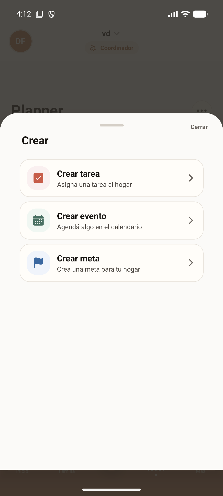
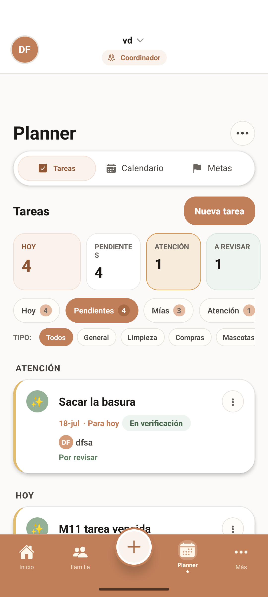
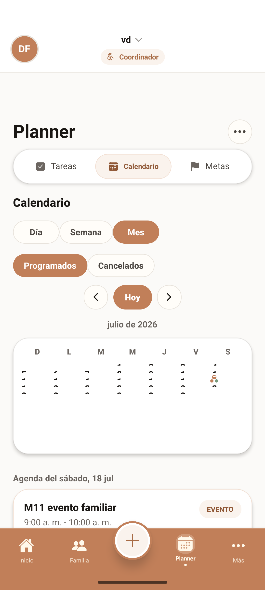
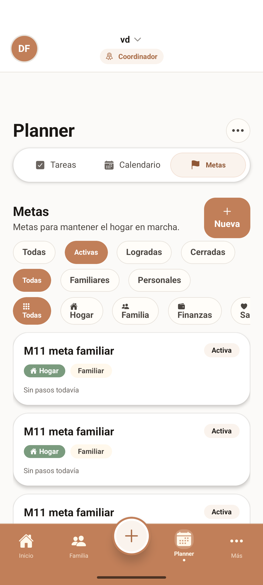
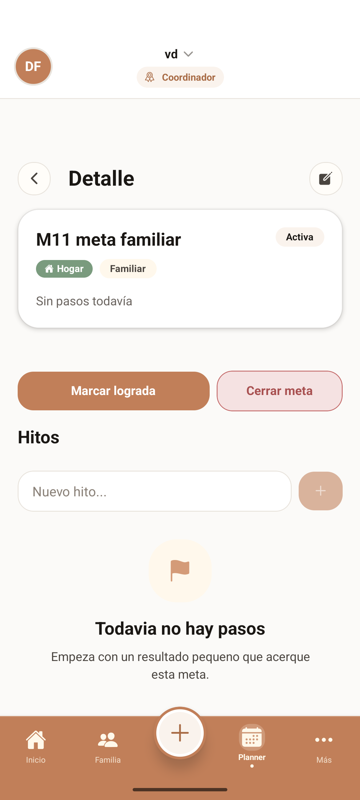
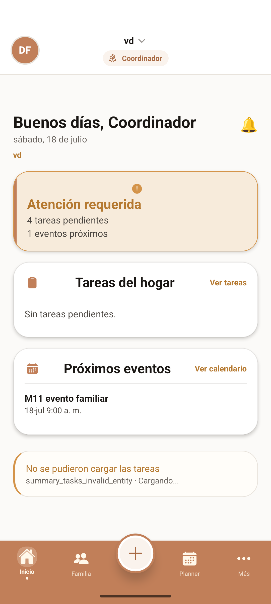
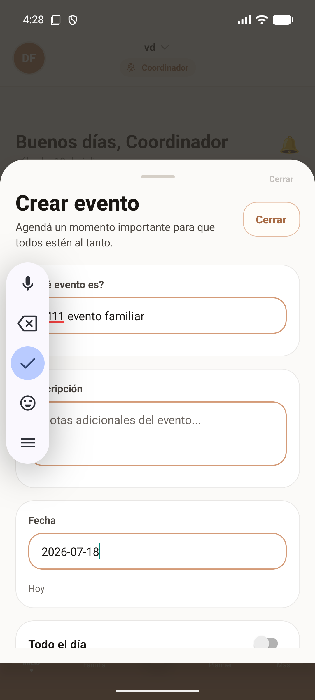
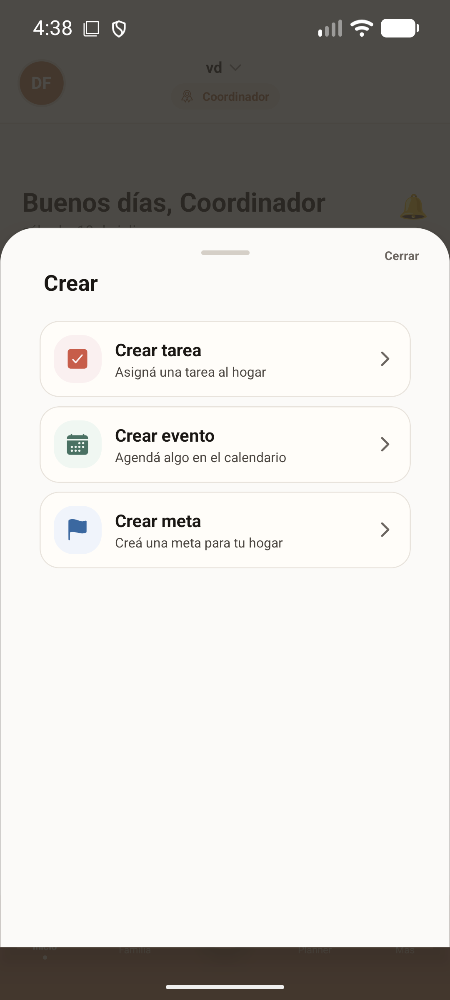
Quick Actions
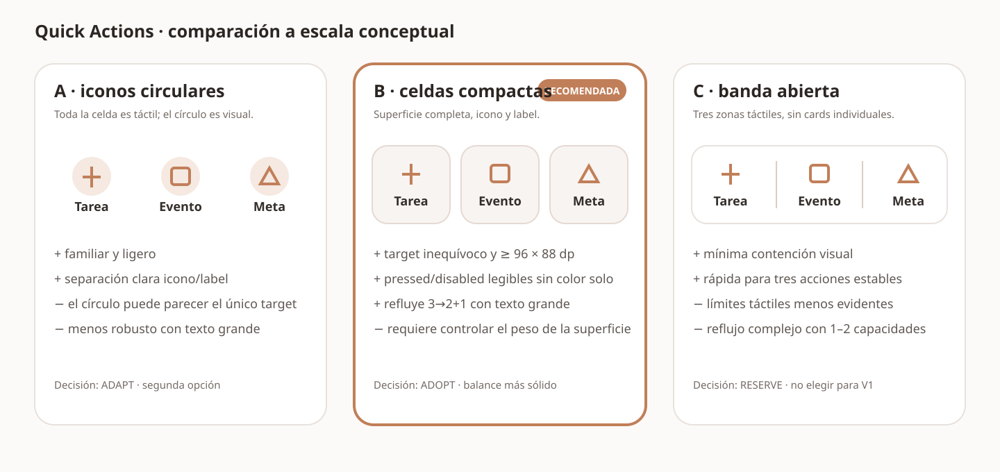
Recomendación B
Celdas compactas de superficie completa: target inequívoco, jerarquía equilibrada y reflujo definido para 1, 2 o 3 capacidades y texto grande.
Listas diferenciadas
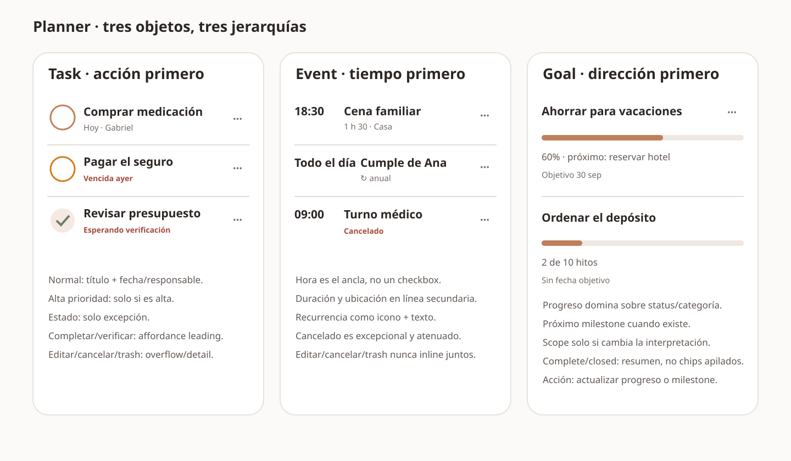
Calendar Month
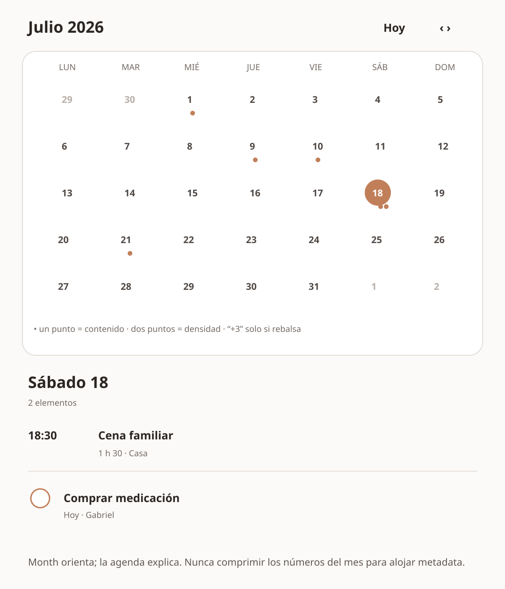
Gestos, fricción y Undo
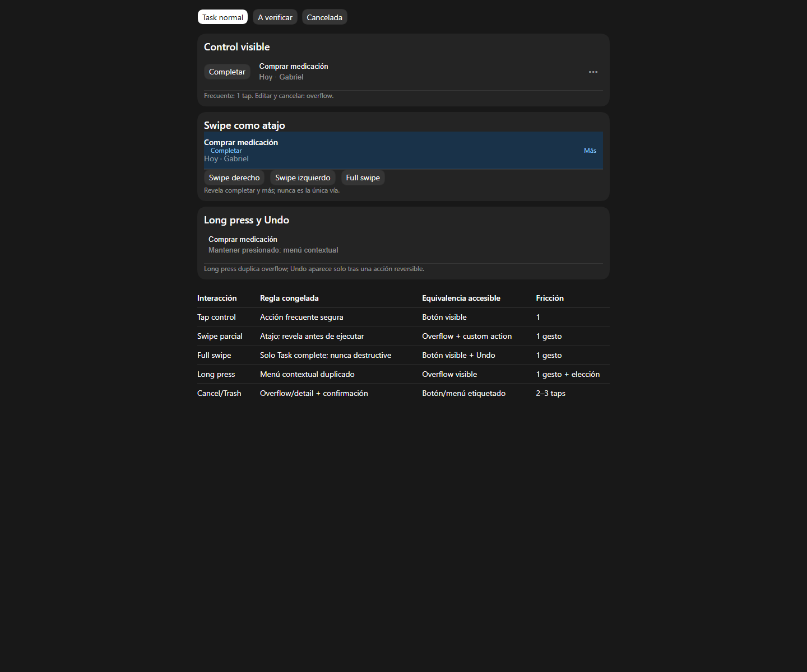
D11–D20
Los gestos son aceleradores redundantes: Task conserva controles visibles, Event y Goal no heredan completion swipe, y full swipe queda limitado a completar una Task reversible.
Límites del prototipo
Especificación visual, no implementación. No contiene navegación, servicios, dependencias, datos personales ni código importable por producción. Las decisiones D1–D36 viven en el Approval Packet, Registry y Freeze Contract.